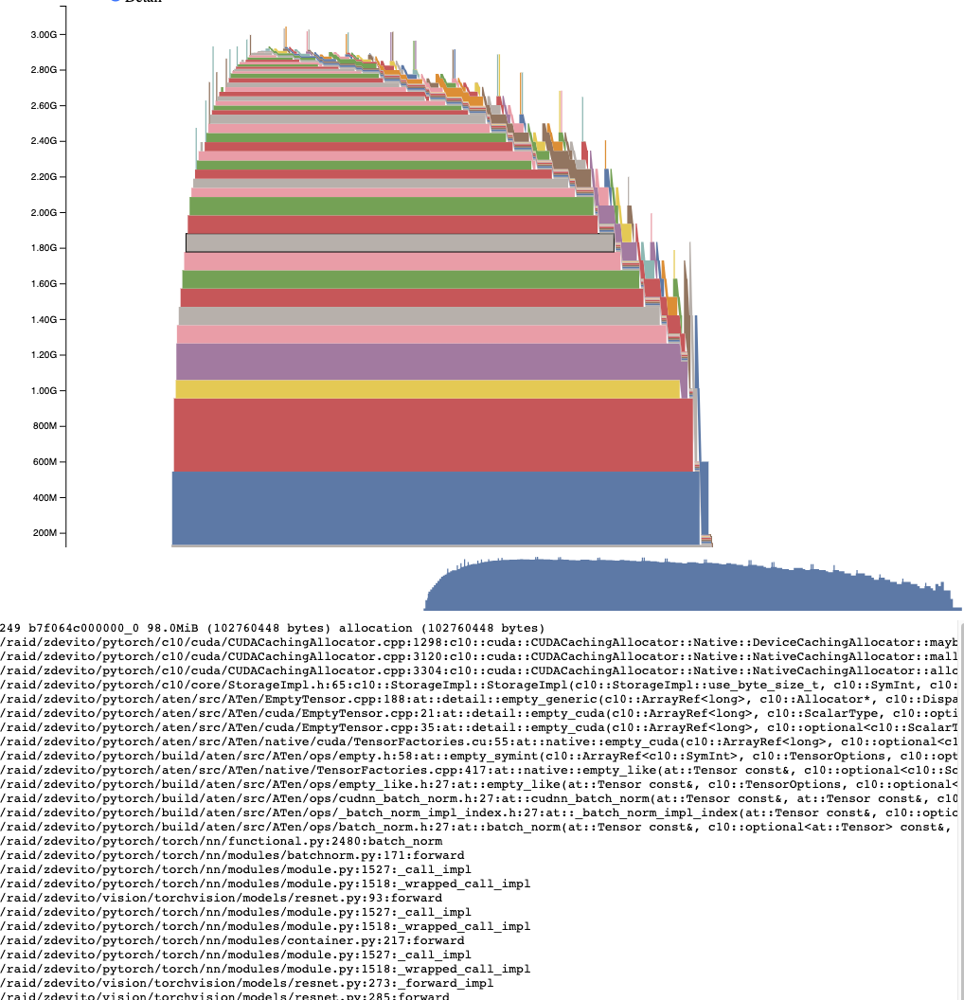

理解 CUDA 内存使用 ¶
为了调试 CUDA 内存使用，PyTorch 提供了一种生成内存快照的方法，该快照可以记录在任何时间点分配的 CUDA 内存的状态，并且可以选择记录导致该快照的分配事件的历史。
生成的快照可以拖放到 pytorch.org/memory_viz 上托管的交互式查看器中，用于探索快照。
生成快照
记录快照的常见模式是启用内存历史记录，运行要观察的代码，然后保存一个包含快照的文件：
# enable memory history, which will
# add tracebacks and event history to snapshots
torch.cuda.memory._record_memory_history()
run_your_code()
torch.cuda.memory._dump_snapshot("my_snapshot.pickle")
使用可视化工具
打开 pytorch.org/memory_viz，将快照文件拖放到可视化工具中。可视化工具是一个在您的计算机上本地运行的 javascript 应用程序。它不会上传任何快照数据。
活动内存时间线
活动内存时间线显示了特定 GPU 上快照中所有实时张量随时间的变化。在图表上平移/缩放以查看更小的分配。将鼠标悬停在分配的块上，可查看该块分配时的堆栈跟踪及其地址等信息。当数据量很大时，可以通过调整详细滑块来渲染更少的分配，从而提高性能。
分配器状态历史
分配器状态历史在左侧时间轴上显示了单个分配器事件。选择时间轴上的事件，可查看该事件时分配器状态的视觉摘要。此摘要显示了从 cudaMalloc 返回的每个单独段以及它如何分割成单个分配或空闲空间。将鼠标悬停在段和块上，可查看内存分配时的堆栈跟踪。将鼠标悬停在事件上，可查看事件发生时的堆栈跟踪，例如张量释放时。内存不足错误报告为 OOM 事件。在 OOM 期间查看内存状态可能有助于了解为什么即使预留了内存，分配也失败的原因。
栈跟踪信息还会报告发生分配的地址。地址 b7f064c000000_0 指的是地址 7f064c000000 的（b）lock，这是该地址第“_0”次被分配。这个唯一的字符串可以在活动内存时间线中查找，并在活动状态历史中搜索，以检查张量分配或释放时的内存状态。
快照 API 参考
- torch.cuda.memory._record_memory_history(enabled='all', context='all', stacks='all', max_entries=9223372036854775807, device=None)[source][source]¶
启用记录与内存分配相关的堆栈跟踪，以便您可以了解在
torch.cuda.memory._snapshot()中分配了哪些内存。除了保留每次分配和释放的堆栈跟踪外，这还将启用记录所有分配/释放事件的记录。
使用
torch.cuda.memory._snapshot()获取此信息，并使用 _memory_viz.py 中的工具来可视化快照。Python 跟踪收集速度快（每条跟踪 2us），因此如果您预计需要调试内存问题，可以考虑在生产任务中启用此功能。
C++ 跟踪收集也很快（约 50ns/帧），对于许多典型程序来说，相当于每条跟踪约 2us，但可能会根据堆栈深度而变化。
- 参数:
enabled (Literal[None, "state", "all"], 可选) – None，禁用记录内存历史。 “state”，保留当前分配内存的信息。“all”，此外还保留所有 alloc/free 调用的历史。默认为“all”。
context (Literal[None, "state", "alloc", "all"], 可选) – None，不记录任何跟踪信息。“state”，记录当前分配内存的跟踪信息。“alloc”，此外还保留 alloc 调用的跟踪信息。“all”，此外还保留 free 调用的跟踪信息。默认为“all”。
stacks (Literal["python", "all"], 可选) – “python”，包括 Python、TorchScript 和 inductor 帧在内的跟踪信息。“all”，此外还包括 C++帧。默认为“all”。
max_entries (int, 可选) – 在记录的历史中保留最多 max_entries 个 alloc/free 事件。
-
torch.cuda.memory._snapshot(device=None)[source][source] ¶ torch.cuda.memory._快照._(device=None)[源][源] ¶ 保存调用时的 CUDA 内存状态快照。
状态以以下结构的字典表示。
class Snapshot(TypedDict): segments : List[Segment] device_traces: List[List[TraceEntry]] class Segment(TypedDict): # Segments are memory returned from a cudaMalloc call. # The size of reserved memory is the sum of all Segments. # Segments are cached and reused for future allocations. # If the reuse is smaller than the segment, the segment # is split into more then one Block. # empty_cache() frees Segments that are entirely inactive. address: int total_size: int # cudaMalloc'd size of segment stream: int segment_type: Literal['small', 'large'] # 'large' (>1MB) allocated_size: int # size of memory in use active_size: int # size of memory in use or in active_awaiting_free state blocks : List[Block] class Block(TypedDict): # A piece of memory returned from the allocator, or # current cached but inactive. size: int requested_size: int # size requested during malloc, may be smaller than # size due to rounding address: int state: Literal['active_allocated', # used by a tensor 'active_awaiting_free', # waiting for another stream to finish using # this, then it will become free 'inactive',] # free for reuse frames: List[Frame] # stack trace from where the allocation occurred class Frame(TypedDict): filename: str line: int name: str class TraceEntry(TypedDict): # When `torch.cuda.memory._record_memory_history()` is enabled, # the snapshot will contain TraceEntry objects that record each # action the allocator took. action: Literal[ 'alloc' # memory allocated 'free_requested', # the allocated received a call to free memory 'free_completed', # the memory that was requested to be freed is now # able to be used in future allocation calls 'segment_alloc', # the caching allocator ask cudaMalloc for more memory # and added it as a segment in its cache 'segment_free', # the caching allocator called cudaFree to return memory # to cuda possibly trying free up memory to # allocate more segments or because empty_caches was called 'oom', # the allocator threw an OOM exception. 'size' is # the requested number of bytes that did not succeed 'snapshot' # the allocator generated a memory snapshot # useful to coorelate a previously taken # snapshot with this trace ] addr: int # not present for OOM frames: List[Frame] size: int stream: int device_free: int # only present for OOM, the amount of # memory cuda still reports to be free
- 返回值:
快照字典对象